Advanced Machine Learning
20: Model Comparison & Calibration
Schedule (you are here )
| # | date | topic | description |
|---|---|---|---|
| 1 | 24-Aug-2026 | Introduction | |
| 2 | 26-Aug-2026 | Foundations of learning | Drop/Add |
| 3 | 31-Aug-2026 | PAC learnability | HW1 |
| 4 | 02-Sep-2026 | Linear learning models | |
| 5 | 07-Sep-2026 | Labor Day Holiday | Holiday |
| 6 | 09-Sep-2026 | Principal Component Analysis | Project ideas |
| 7 | 14-Sep-2026 | Curse of Dimensionality | HW2, HW1 due |
| 8 | 16-Sep-2026 | Bayesian Decision Theory | |
| 9 | 21-Sep-2026 | Parameter estimation: MLE | |
| 10 | 23-Sep-2026 | Parameter estimation: MAP & NB | finalize teams |
| 11 | 28-Sep-2026 | Logistic Regression | HW3, HW2 due |
| 12 | 30-Sep-2026 | Kernel Density Estimation | |
| 13 | 05-Oct-2026 | Support Vector Machines | |
| 14 | 07-Oct-2026 | Matrix Factorization | |
| 15 | 12-Oct-2026 | * Midterm | Exam, HW3 due |
| 16 | 14-Oct-2026 | k-means clustering | |
| 17 | 19-Oct-2026 | Invited: Intro to Causal Learning I |
| # | date | topic | description |
|---|---|---|---|
| 18 | 21-Oct-2026 | Invited: Intro to Causal Learning II | |
| 19 | 26-Oct-2026 | * Mid-point projects checkpoint | HW4, P |
| 20 | 28-Oct-2026 | Expectation Maximization | |
| 21 | 02-Nov-2026 | Stochastic Gradient Descent | |
| 22 | 04-Nov-2026 | Automatic Differentiation | |
| 23 | 09-Nov-2026 | Nonlinear embedding approaches | HW5, HW4 due |
| 24 | 11-Nov-2026 | Model comparison & calibration | |
| 25 | 16-Nov-2026 | Convolutional Neural Networks | |
| 26 | 18-Nov-2026 | Word Embedding | |
| 27 | 23-Nov-2026 | Thanksgiving Break | Holiday |
| 28 | 25-Nov-2026 | Thanksgiving Break | Holiday |
| 29 | 30-Nov-2026 | * Final Exam | Exam |
| 30 | 02-Dec-2026 | Project Final Presentations | HW5 due, P |
| 31 | 07-Dec-2026 | No class | Classes End |
| 32 | 16-Dec-2026 | Project Reports | due |
| 33 | 17-Dec-2026 | Grades due 5 p.m. | PAWS |
Outline for the lecture
- Bias-Variance Trade-off & No Free Lunch Theorem
- Problems with Accuracy (Imbalance & Rebalancing Paradox)
- Confusion Matrix, Visual Quotients, Balanced Accuracy & $F_1$
- Cross-Validation, Hyperparameter Search & Expected Profit
- Profit Curves, ROC / AUC & Model Calibration
Bias-variance trade off revisited
Bias-Variance Decomposition for MSE
- MSE as an error measure
- $E\left[ (\hat{\theta} - \theta)^2 \right]$
- $= E\left[ \hat{\theta}^2 - 2 \hat{\theta}\theta + \theta^2\right]$
- $= E\left[ \hat{\theta}^2\right] - 2 E\left[\hat{\theta}\right] \theta + \theta^2$
- Add and subtract $E\left[ \hat{\theta} \right]^2$
- \begin{align} = & E\left[ \hat{\theta} \right]^2 - 2 E\left[\hat{\theta}\right] \theta + \theta^2 \\ & + E\left[ \hat{\theta}^2\right] - E\left[ \hat{\theta} \right]^2 \end{align}
- \begin{align} = & \underbrace{(E\left[ \hat{\theta} \right] - \theta)^2}_{\text{Bias}^2} + \underbrace{E\left[ \hat{\theta}^2\right] - E\left[ \hat{\theta} \right]^2}_{\text{Variance}} \end{align}
- Is not variance $E\left[ (\hat{\theta} - E\left[\hat{\theta}\right])^2\right]$?
- $E\left[ (\hat{\theta} - E\left[\hat{\theta}\right])^2\right]$
- $= E\left[ \hat{\theta}^2 - 2\hat{\theta}E\left[\hat{\theta}\right] + E\left[\hat{\theta}\right]^2 \right]$
- $= E\left[ \hat{\theta}^2 \right] - 2 E\left[ \hat{\theta}\right]E\left[\hat{\theta}\right] + E\left[\hat{\theta}\right]^2$
- $= E\left[ \hat{\theta}^2 \right] - 2 E\left[\hat{\theta}\right]^2 + E\left[\hat{\theta}\right]^2$
- $= E\left[ \hat{\theta}^2 \right] - E\left[\hat{\theta}\right]^2$
Bias-variance tradeoff
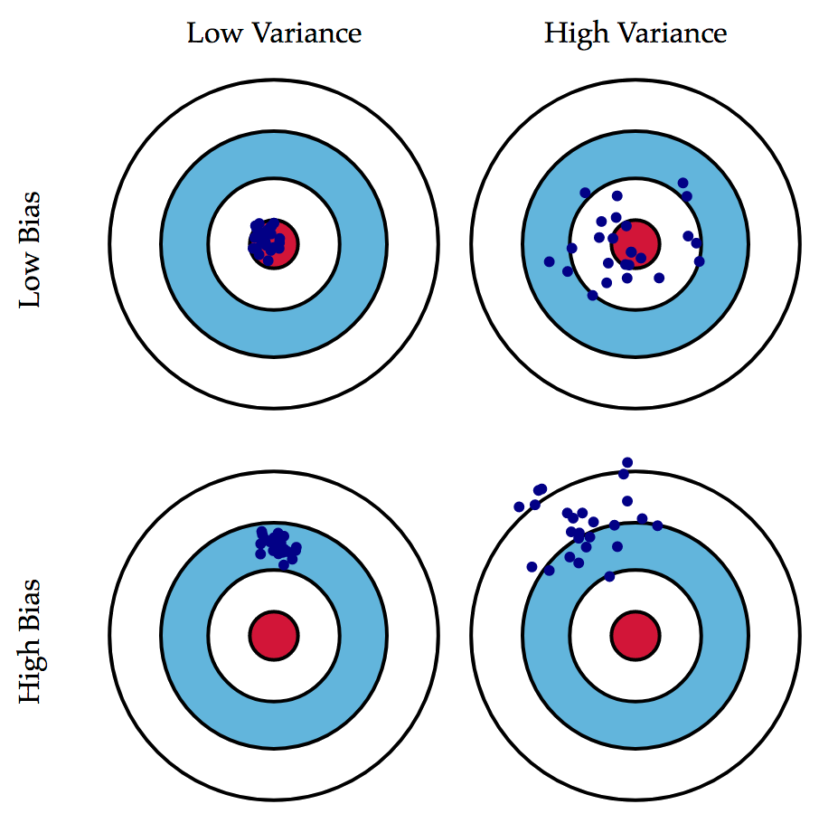
If data is all we have, how do we know which model is better?
Training Error Lies: 100 Random Dataset Splits
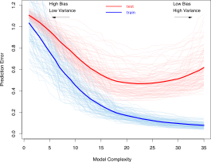
Each thin hairline is one random dataset draw $\CD_i$ (vertical spread = Variance). As complexity grows, training error $\downarrow$ monotonically while test error $\uparrow$ and fans out — never select model complexity on training error!
Select a Model That Generalizes Best
We pick hyperparameter $\hat{\theta}_i = \argmin_{\theta} g(\theta; \CD_i)$ by minimizing validation error $g(\theta; \CD_i)$ to approximate true test error $G(\theta)$:
$\EE_{\CD}\!\left[(g(\theta; \CD) - G(\theta))^2\right] = \text{Bias}(g)^2 + \text{Variance}(g)$
Takeaway: A small bias ($\EE[\hat{\theta}] \neq \theta^*$) with low variance stays consistently near $\theta^*$, whereas an unbiased estimator with high variance can pick disastrous $\hat{\theta}_i$ far from $\theta^*$!
From Classical Bias-Variance to Double Descent
Why the Second Descent? At $p = n$, the unique interpolant has exploding norm $\|\hat{\vth}\|_2 \sim \sigma_{\min}(\vec{X})^{-1} \to \infty$. For $p \gg n$, SGD finds the minimum-norm interpolant $\hat{\vth}_{\text{min}} = \argmin_{\vec{X}\vth = \vec{y}} \|\vth\|_2^2 = \vec{X}^{\top}(\vec{X}\vec{X}^{\top})^{-1}\vec{y}$, whose norm and variance shrink as $p$ grows!
No free lunch theorem
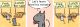
"Even after the observation of the frequent conjunction of objects, we have no reason to draw any inference concerning any object beyond those of which we have had experience."David Hume, in A Treatise of Human Nature, Book I, part 3, Section 12.
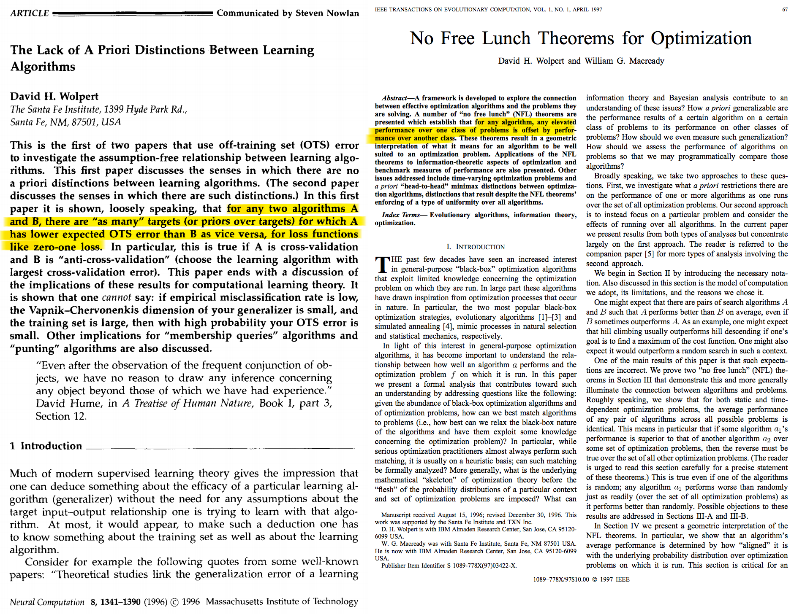
No free lunch theorem (simply put)
There is not a universally good algorithm that's best on all possible test data!
Problems with accuracy
Accuracy on a Skewed Dataset (95% vs. 5%)
$$\text{accuracy} = \frac{\text{number of correct predictions}}{\text{number of total predictions}}$$
Naive Fix: Manually Rebalance Training Data (50% / 50%)
Suppose $N = 10^6$. Take all $5\%$ of Class $0$ ($50{,}000$) + $5\%$ from Class $1$ ($50{,}000$) $\implies 10^5$ balanced samples:
The Rebalancing Paradox: What Happens in the Wild?
Now deploy both classifiers on the true population ($5\%$ Class $0$, $95\%$ Class $1$):
"Winner" Classifier A ($92\%$ on balanced):
• Class $0$ ($5\%$): $100\%$ correct
• Class $1$ ($95\%$): $83\%$ correct$$\text{ACC}_{\text{wild}}(A) = 0.05(1) + 0.95(0.83) \approx \color{#dc322f}{\mathbf{84\%}}$$
"Loser" Classifier B ($90\%$ on balanced):
• Class $0$ ($5\%$): $80\%$ correct
• Class $1$ ($95\%$): $100\%$ correct$$\text{ACC}_{\text{wild}}(B) = 0.05(0.80) + 0.95(1) = \mathbf{99\%}$$
Confusion Matrix
Two-Class Confusion Matrix
- Columns ($\mathbf{p}, \mathbf{n}$): True ground-truth class.
- Rows ($\mathbf{P}, \mathbf{N}$): Classifier predicted class.
- Main diagonal ($\text{TP}, \text{TN}$): Correct decisions.
- Off-diagonal ($\text{FP}, \text{FN}$): Two distinct types of mistakes (ideally $0$, but in practice a trade-off!).
Statistician view of the world
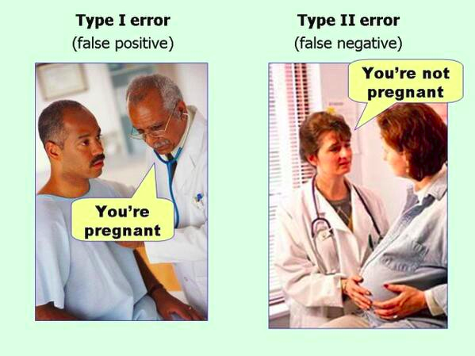
Visual Quotient Mnemonic: Accuracy
$$\text{ACC} = \frac{\text{TP} + \text{TN}}{\text{TP} + \text{FP} + \text{FN} + \text{TN}}$$ When $\text{TN}$ is huge, it dominates both the numerator and denominator!
Family 1: Sensitivity & Specificity (Column Quotients)
Family 2: Precision & Recall (Information Retrieval)
Why One Metric Is Not Enough: How Models Cheat
- Maximize Recall (Sensitivity) alone?
Predict Positive ($\mathbf{P}$) for everything $\implies \text{FN} = 0 \implies \mathbf{100\%\text{ Recall}}$ (with massive $\text{FP}$!). - Maximize Specificity alone?
Predict Negative ($\mathbf{N}$) for everything $\implies \text{FP} = 0 \implies \mathbf{100\%\text{ Specificity}}$ (catches $0$ positives!). - Maximize Precision alone?
Set threshold ultra-high and predict $\mathbf{P}$ on only $1$ certain sample $\implies \mathbf{100\%\text{ Precision}}$!
Imbalanced Example: Raw Accuracy Rewards Ignoring P
| Pred \ True | $\mathbf{p}$ | $\mathbf{n}$ |
|---|---|---|
| $\mathbf{P}$ | $5$ | $50$ |
| $\mathbf{N}$ | $10$ | $10{,}000$ |
1. Our Classifier's Accuracy: $$\text{acc} = \frac{5 + 10{,}000}{10 + 5 + 50 + 10{,}000} = \mathbf{99.4\%}$$2. Dummy "Predict All $\mathbf{N}$" ($\text{TP}=0, \text{FP}=0$): $$\text{acc}_{\text{all-}N} = \frac{0 + 10{,}050}{15 + 10{,}050} \approx \color{#dc322f}{\mathbf{99.9\% > 99.4\%!}}$$
Balanced Accuracy & F1 Score Catch the Cheater
Balanced Accuracy ($\text{BA}$): $$\text{BA} = \frac{\text{Sensitivity} + \text{Specificity}}{2}$$• Our model ($\begin{smallmatrix}5 & 50\\ 10 & 10000\end{smallmatrix}$):
$\text{Sens} = \frac{5}{15} = 33.3\%$, $\text{Spec} = \frac{10000}{10050} = 99.5\%$ $$\text{BA} = \frac{33.3\% + 99.5\%}{2} = \mathbf{66.4\%}$$ • Predict All $\mathbf{N}$: $\frac{0\% + 100\%}{2} = \color{#dc322f}{\mathbf{50\%}}$ (chance!)
$F_1$ Score (Harmonic Mean of $P, R$): $$F_1 = 2\,\frac{P \cdot R}{P + R}$$• Our model ($\begin{smallmatrix}5 & 50\\ 10 & 10000\end{smallmatrix}$):
$P = \frac{5}{55} = 9.1\%$, $R = \frac{5}{15} = 33.3\%$ $$F_1 = \frac{2(0.091)(0.333)}{0.091 + 0.333} = \mathbf{14.3\%}$$ • Predict All $\mathbf{N}$: $R = 0 \implies \color{#dc322f}{\mathbf{F_1 = 0\%!}}$
Multiclass Confusion Matrix: Drug Repurposing
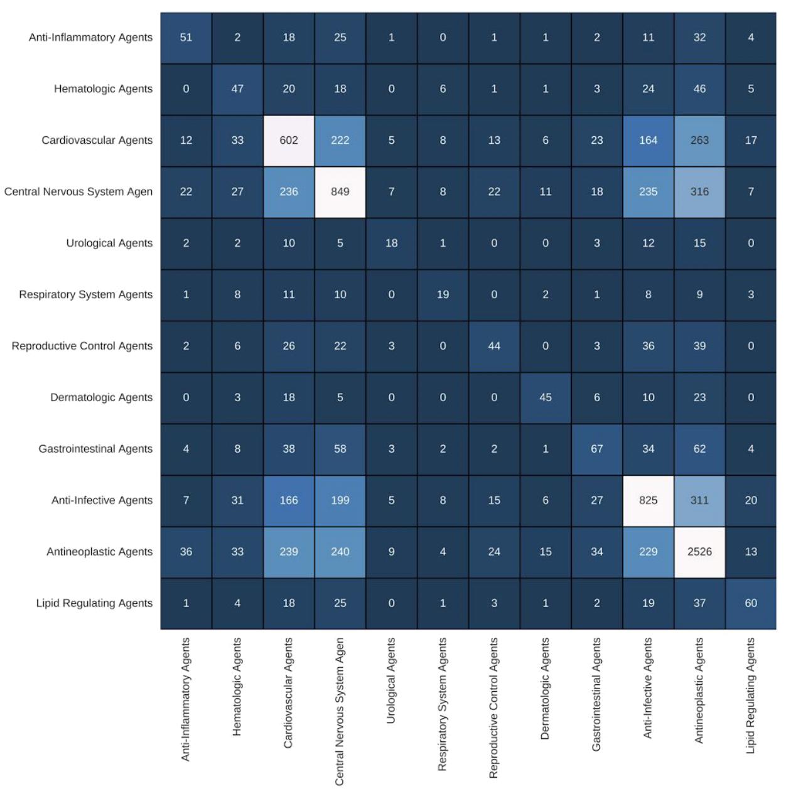
Which Metric is the right one?
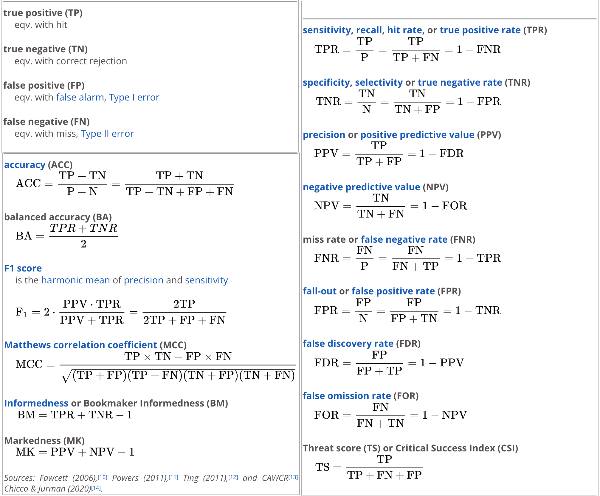
it depends
Cross Validation
5-fold cross validation
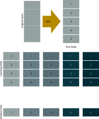
Cross validation results
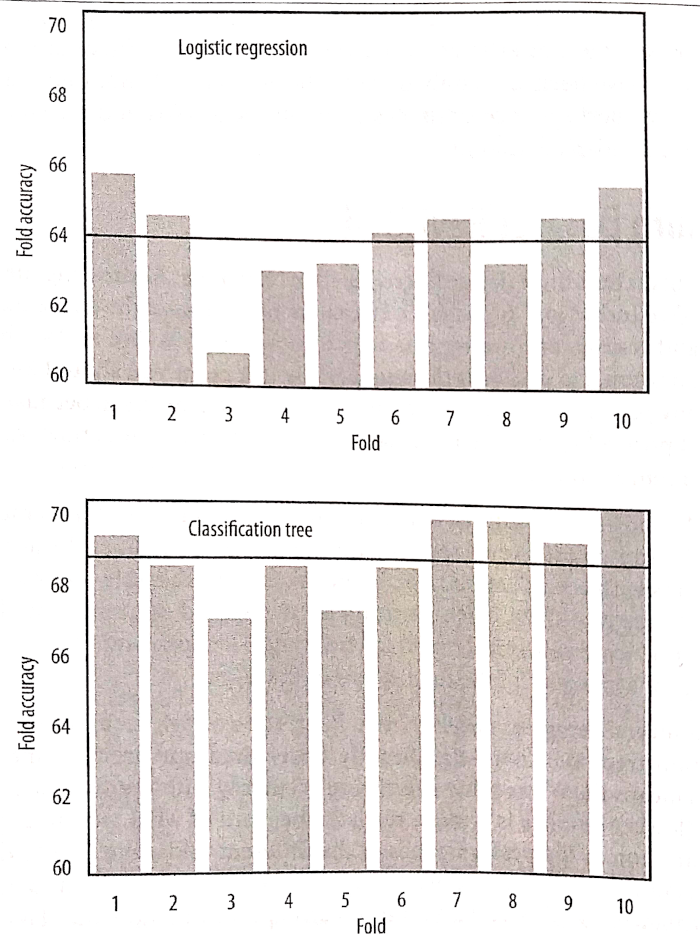
Grid search workflow
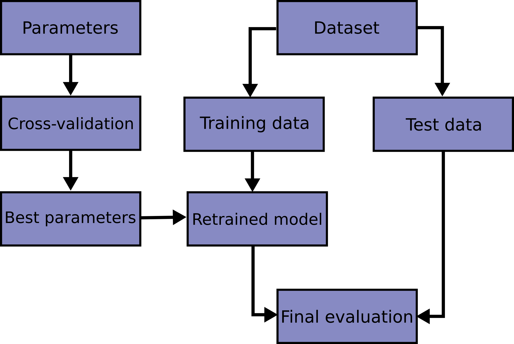
Extra testing data

Grid Search: Combinatorial Explosion
- $5$ values for $h_1 \times 5$ values for $h_2 = \mathbf{25\text{ models}}$ trained per fold!
- Across $5$ folds: $5 \times 25 = \mathbf{125\text{ training runs}}$ (+ final refit on all training folds).
- With $M$ hyperparameters of $G$ values each: $\mathcal{O}(K \cdot G^M)$ — exponential in $M$!
Nested Cross Validation
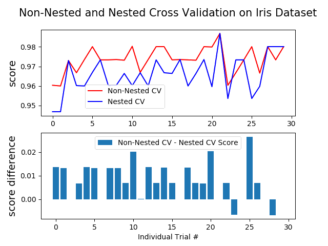
Hyperparameter optimization
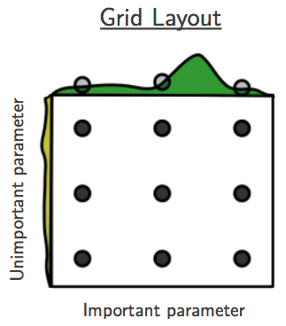
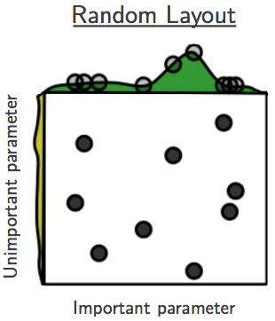
Tools for hyperparameter optimization
Expected Value (profit)
Expected value
- Let's denote an outcome $i$ as $o_i$
- The probability of that outcome as $\prob{p}{o_i}$
- And its value as $\prob{v}{o_i}$
- The expected value is nothing but $$ EV = \sum_i^K \prob{p}{o_i}\cdot\prob{v}{o_i} $$
Example: targeted marketing
- A consumer buys the product for $\$200$ and our product-related costs are $\$100$.
- To target the consumer with the offer, we also incur a cost. Let’s say that we mail some flashy marketing materials, and the overall cost including postage is $\$1$, yielding a value (profit) of $\prob{v}{o_R} = \$99$ if the consumer responds (buys the product).
- Now, what about $v_{NR}$, the value to us if the consumer does not respond? We still mailed the marketing materials, incurring a cost of $\$1$ or equivalently a benefit of $-\$1$.
Example: shall we target this specific consumer?
- $\prob{p}{o_R} \cdot \$99 - [1 - \prob{p}{o_{R}}]\cdot \$1 \gt 0$
- $\prob{p}{o_R} \cdot \$99 \gt [1 - \prob{p}{o_{R}}]\cdot \$1$
- $\prob{p}{o_R} \gt 0.01$
-
Send marketing materials if probability of responding is $\gt 1\%$
First, convert confusion matrix to probabilities
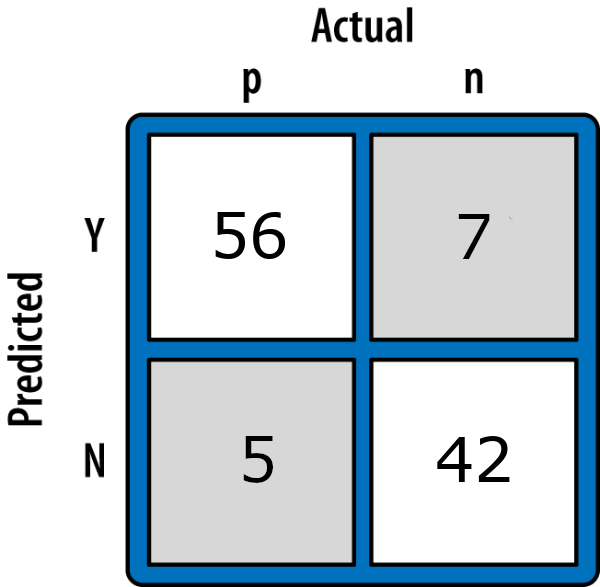
Col $n$: $7+42=49$
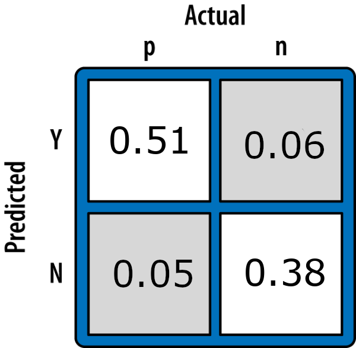
$\prob{p}{p} = \frac{61}{110} = \mathbf{0.55},\; \prob{p}{n} = \frac{49}{110} = \mathbf{0.45}$
$\prob{p}{Y\mid p}=0.92,\; \prob{p}{N\mid n}=0.86$
Second, estimate the cost benefit matrix
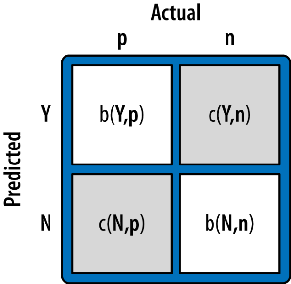
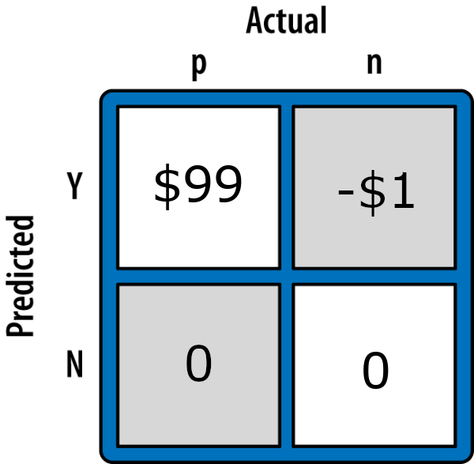
Expected Value Calculation
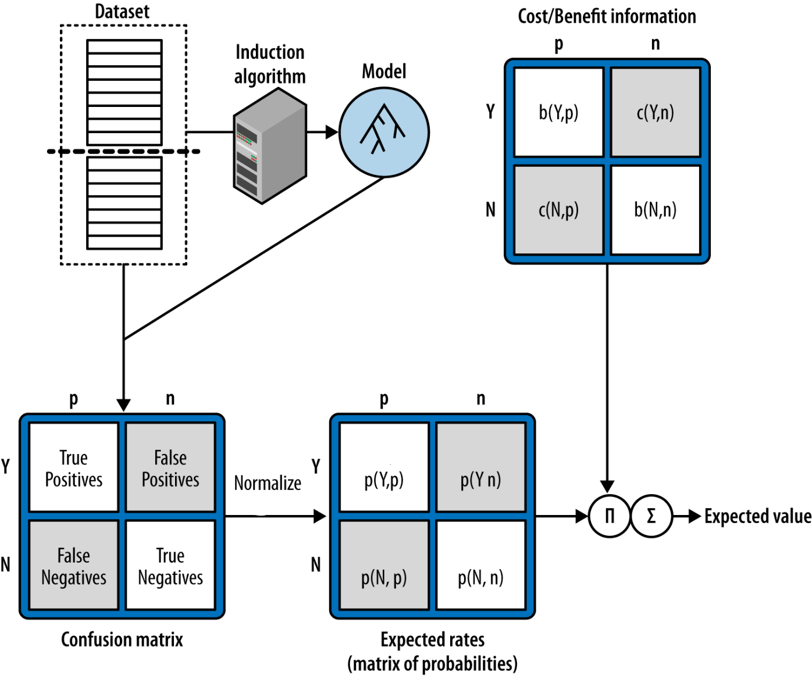
Example: targeted marketing — What's the profit?
\begin{align} EV = &\, \prob{p}{Y, p} \prob{b}{Y, p} + \prob{p}{N, p} \prob{b}{N, p} + \prob{p}{N, n} \prob{b}{N, n} + \prob{p}{Y, n} \prob{b}{Y, n} \\ = & \fragment{0}{\, \prob{p}{Y| p}\prob{p}{p} \prob{b}{Y, p} + \prob{p}{N|p} \prob{p}{p} \prob{b}{N, p}} \\ & \fragment{0}{+ \prob{p}{N|n} \prob{p}{n} \prob{b}{N, n} + \prob{p}{Y|n} \prob{p}{n} \prob{b}{Y, n}}\\ = &\, \fragment{1}{\prob{p}{p} \left[ \prob{p}{Y| p} \prob{b}{Y, p} + \prob{p}{N|p} \prob{b}{N, p} \right]} \\ & \fragment{1}{+ \prob{p}{n} \left[ \prob{p}{N|n} \prob{b}{N, n} + \prob{p}{Y|n} \prob{b}{Y, n} \right]}\\ =&\, \fragment{2}{0.55 \left[ 0.92\cdot \prob{b}{Y, p} + 0.08\cdot \prob{b}{N, p} \right]} \\ & \fragment{2}{+ 0.45 \left[ 0.86\cdot \prob{b}{N, n} + 0.14\cdot \prob{b}{Y, n} \right]}\\ =&\, \fragment{3}{0.55 \left[ 0.92\cdot99 + 0.08\cdot 0 \right] + 0.45 \left[ 0.86\cdot 0 + 0.14\cdot (-1) \right]}\\ =&\, \fragment{4}{\$50.04} \end{align}What did we learn?
Decisions have costs
Visualizing model performance
Remember that Bayesian decision boundary?
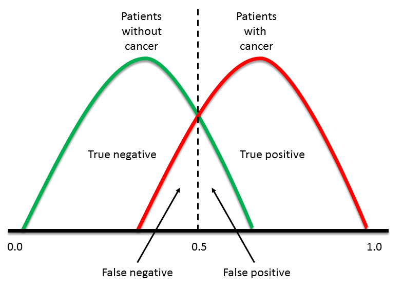
Let's move the boundary around until we are happy
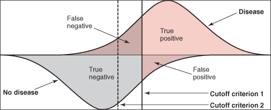
A classifier and confusion matrix
With a ranking classifier, a classifier plus a threshold produces a single confusion matrix.
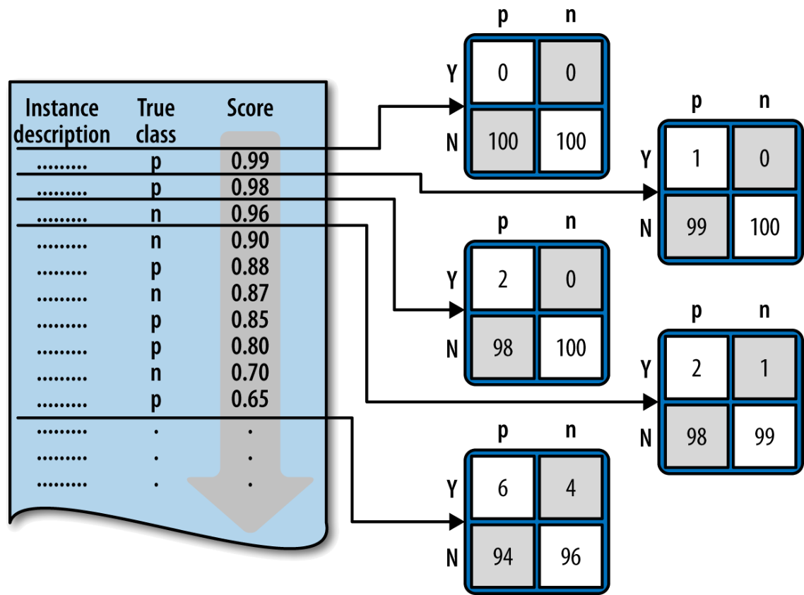
Profit Curve: Example (Small Margin)
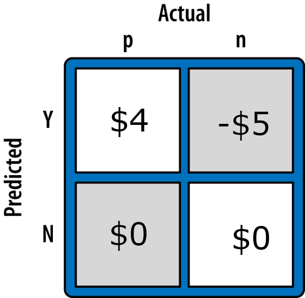
Profit Curves Across Classifiers
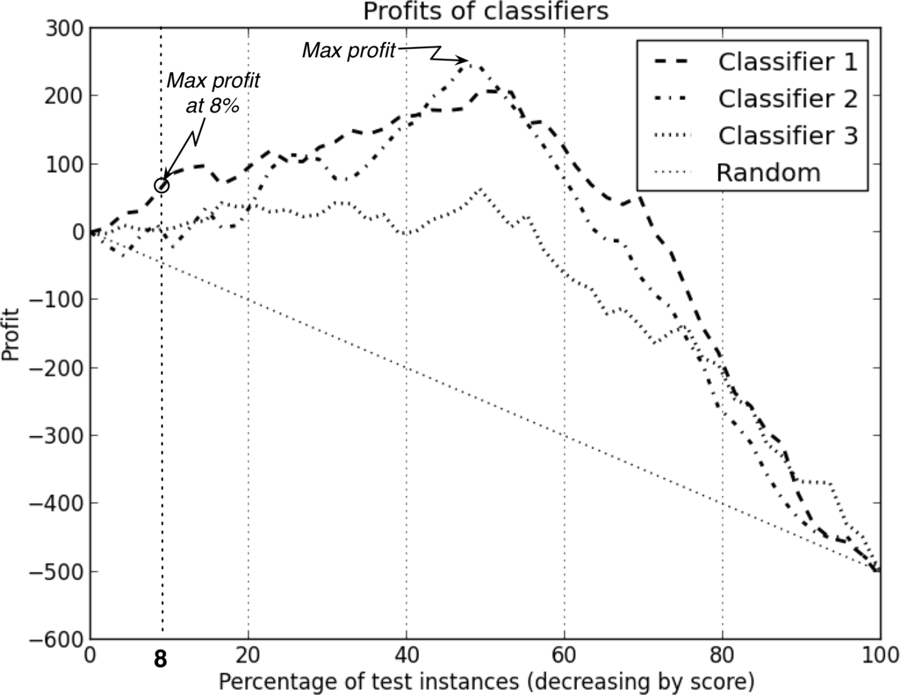
Receiver Operating Characteristics (ROC)
From Profit Curves to ROC
- Profit curves work well only when class priors and costs/benefits are known and stable.
- In practice, priors fluctuate (e.g., fraud rates vary month-to-month) and campaign budgets/costs change.
- Receiver Operating Characteristic (ROC) decouples performance from priors and costs by plotting the two column quotients!
ROC Axes: Hit Rate (TPR) vs. False Alarm Rate (FPR)
ROC Space
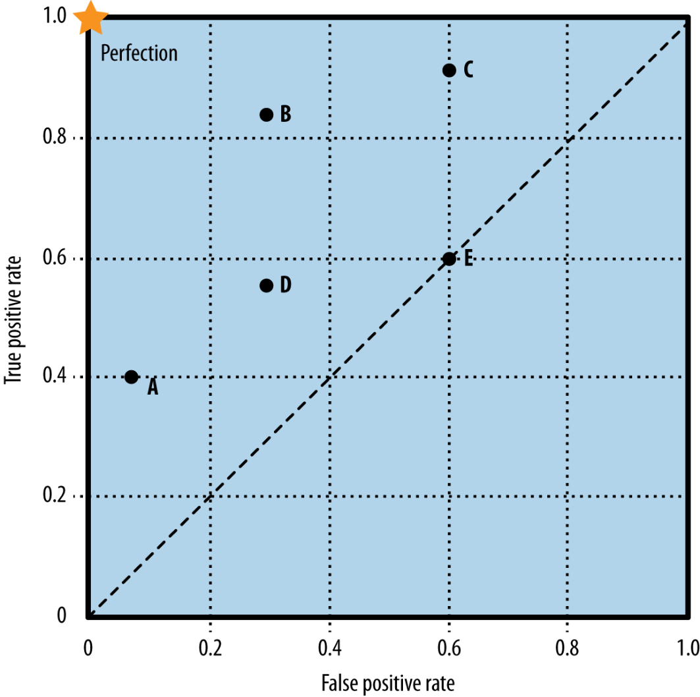
ROC: Each Point Is a Threshold
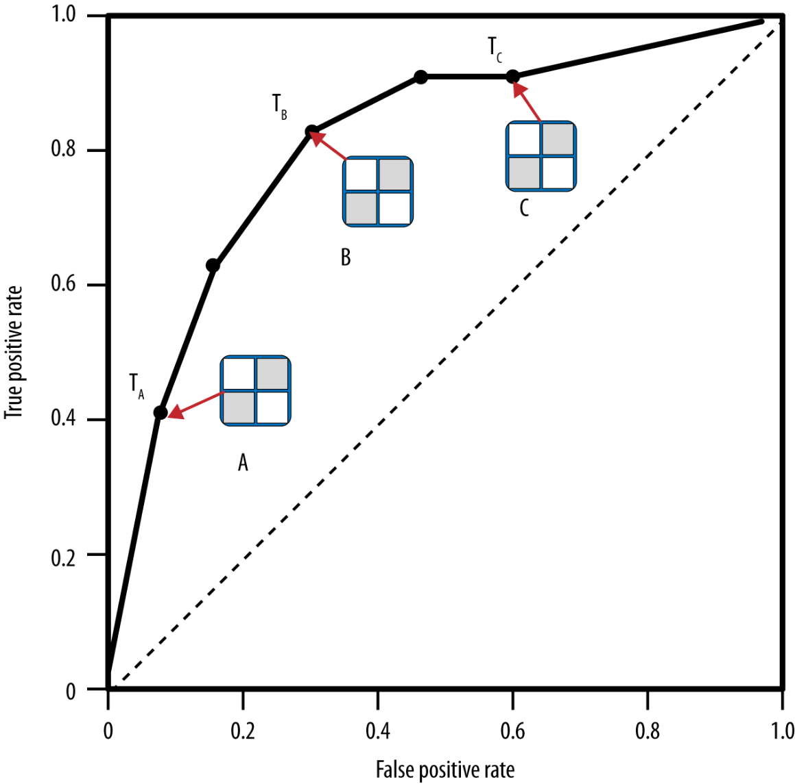
ROC Construction: Step by Step
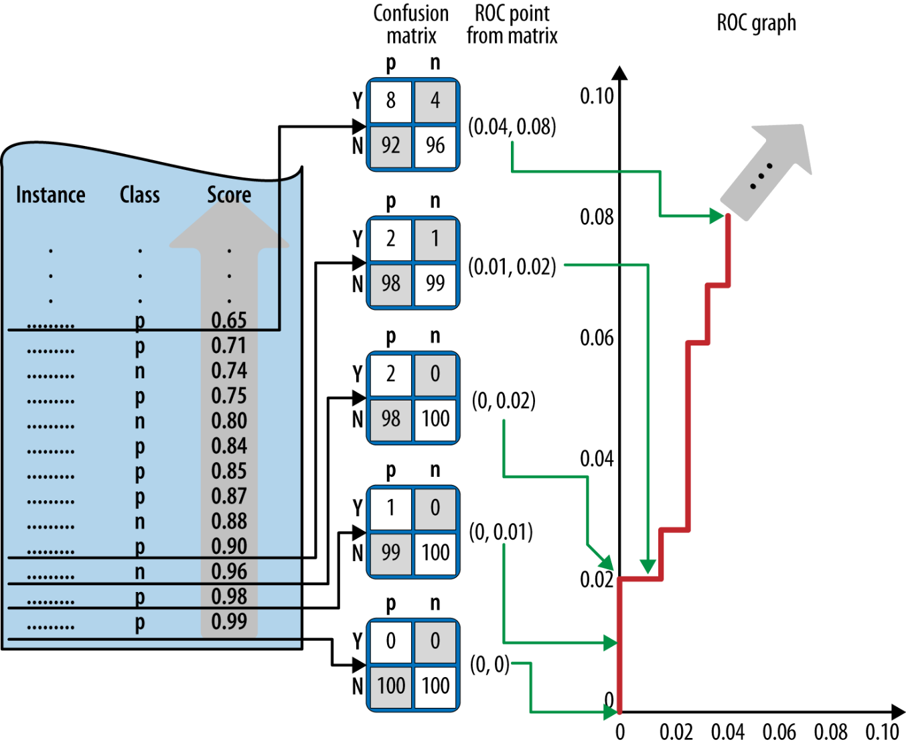
Area Under the ROC Curve (AUC)
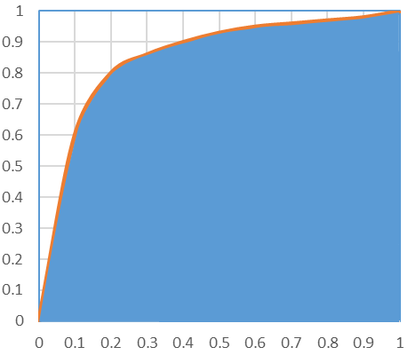
What Does AUC Mean Probabilistically?
Equivalent to the Mann-Whitney-Wilcoxon ranking statistic (and Gini coefficient):
$$\text{AUC} = \PP\Big( s(\vec{x}_{+}) > s(\vec{x}_{-}) \Big)$$ The probability that a randomly chosen positive sample $\vec{x}_{+}$ is ranked (scored) higher than a randomly chosen negative sample $\vec{x}_{-}$!
Threshold, ROC Space & Expected Profit Explorer
On Model Calibration
What is Model Calibration?
Model calibration is the problem of predicting probability estimates representative of the true correctness likelihood
Why do we need it?
We want the probability associated with the predicted class label to reflect its ground truth correctness likelihood.
If that is the case, we know when we can trust the model, and when to route the decision to a human!
Modern Best-Performing Models Are Lying
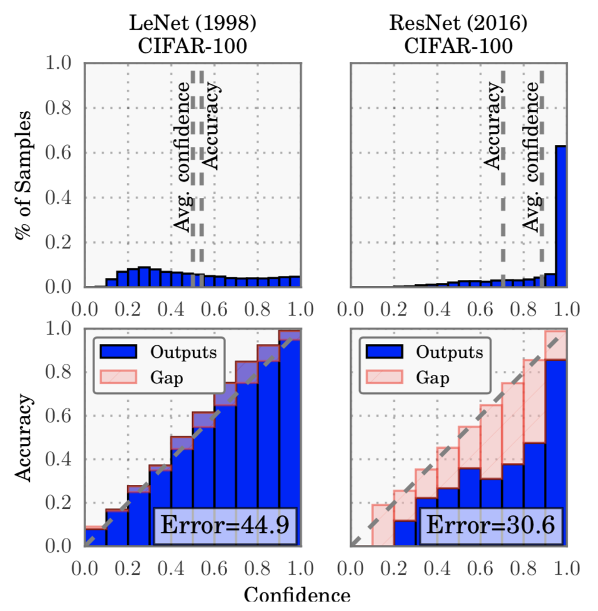
- 5-layer LeNet (1998) is well-calibrated
- 110-layer ResNet (2016) achieves much higher accuracy, yet is poorly calibrated (overconfident)
- Why does this happen, and how do we fix it?
Formal definitions
- Inputs $X \in {\cal X}$ and labels $Y \in {\cal Y} = \{1, \dots, K\}$ follow ground truth joint distribution $\pi(X,Y) = \pi(Y|X)\pi(X)$.
- A neural network $h(X) = (\hat{Y}, \hat{P})$ outputs a class prediction $\hat{Y}$ and a confidence score $\hat{P}$.
- We want the confidence estimate $\hat{P}$ to be calibrated, which intuitively means that $\hat{P}$ represents a true probability.
- Perfect calibration:
$$ \PP(\hat{Y} = Y \mid \hat{P} = p) = p, \quad \forall p \in [0, 1] $$
Reliability Diagrams
- Reliability Diagrams visualize model calibration (DeGroot & Fienberg, 1983)
- Plot expected sample accuracy as a function of confidence
- Perfect calibration ($\PP(\hat{Y} = Y | \hat{P} = p) = p$) lies on the identity diagonal
- Any deviation from the diagonal is miscalibration
Calibration Across Classical Classifiers
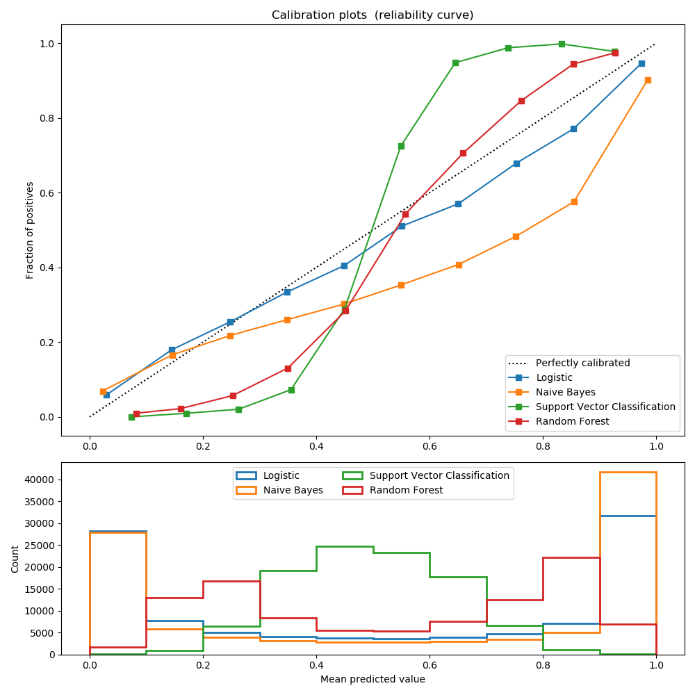
Reliability Diagrams: Binning
- Group predictions into $M$ interval bins (each of size $1/M$) and calculate the accuracy of each bin.
- Let $B_m$ be the set of indices of samples whose prediction confidence falls into the interval $I_m = (\frac{m-1}{M}, \frac{m}{M}]$.
- The accuracy of $B_m$ is: $$ \mbox{acc}(B_m) = \frac{1}{|B_m|} \sum_{i \in B_m} \mathbf{1}(\hat{y}_i = y_i) $$
- The average confidence within bin $B_m$ is: $$ \mbox{conf}(B_m) = \frac{1}{|B_m|} \sum_{i \in B_m} \hat{p}_i $$
Expected Calibration Error (ECE)
- We use empirical approximations directly: $$ \EE_{\hat{P}}\left[ \left| \PP(\hat{Y} = Y | \hat{P} = p) - p \right| \right] $$
- Expected Calibration Error (ECE) — weighted average of the red gap bars across all $M$ bins: $$ \mbox{ECE} = \sum_{m=1}^M \frac{|B_m|}{n} \left| \mbox{acc}(B_m) - \mbox{conf}(B_m) \right| $$
- Maximum Calibration Error (MCE) — worst-case bin gap for high-risk applications: $$ \mbox{MCE} = \max_{m \in \{1,\dots, M\}} \left| \mbox{acc}(B_m) - \mbox{conf}(B_m) \right| $$
Negative Log-Likelihood (NLL)
- A standard measure of a probabilistic model's quality (also known as cross-entropy loss in deep learning).
- Given a probabilistic model $\hat{\pi}(Y|X)$ and $n$ samples: $$ {\cal L} = - \sum_{i=1}^n \log\left(\hat{\pi}(y_i|x_i)\right) $$
- NLL is a proper scoring rule: in expectation, it is minimized if and only if $\hat{\pi}(Y|X)$ recovers the ground truth conditional distribution $\pi(Y|X)$.
What Affects Calibration?
- Increasing depth and width reduces classification error, but hurts calibration.
- Models trained with Batch Normalization or less weight decay are more miscalibrated.
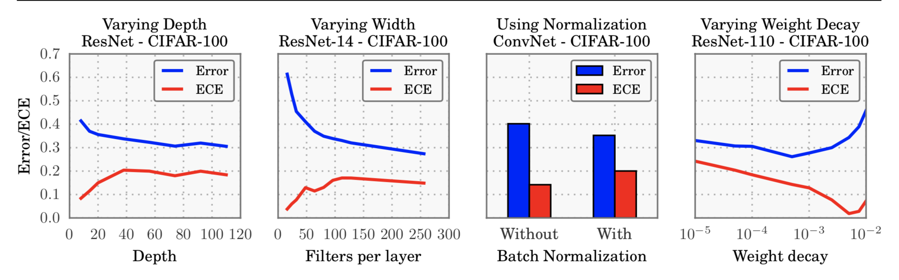
Accuracy vs. NLL During Training
The network overfits NLL (becoming overconfident) long after 0/1 classification error plateaus!
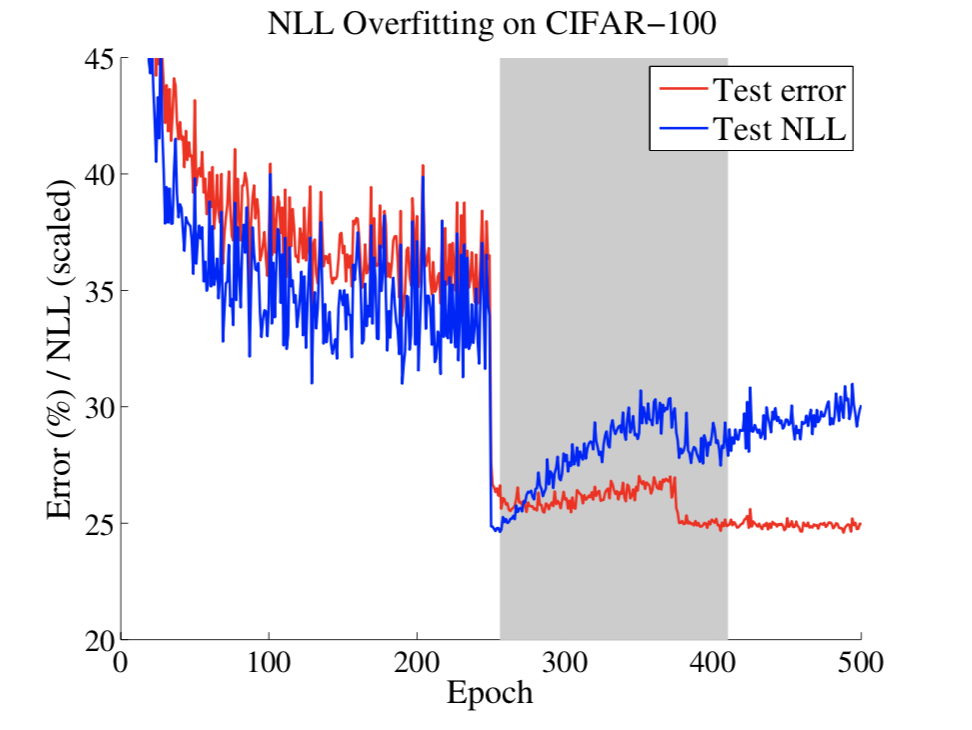
Temperature Scaling
- The neural network computes a vector of non-probabilistic logits $\vec{z}_i$ for each input $\vec{x}_i$, before the softmax layer $\sigma_{\text{SM}}$: $$ \hat{p}_i = \max_k \sigma_{\text{SM}}(\vec{z}_i)^{(k)} = \max_k \frac{\exp(z_i^{(k)})}{\sum_{j=1}^K \exp(z_i^{(j)})} $$
- Temperature Scaling divides the logits by a single scalar parameter $T > 0$ before the softmax: $$ \hat{q}_i = \max_k \sigma_{\text{SM}}\left(\frac{\vec{z}_i}{T}\right)^{(k)} $$
Properties of Temperature Scaling
- $T = 1$: recovers the original uncalibrated probabilities $\hat{p}_i$.
- As $T > 1$ increases: softens the softmax distribution (raises output entropy) and cures overconfidence.
- As $T \to \infty$: $\hat{q}_i \to 1/K$ (uniform maximum uncertainty).
- As $T \to 0$: collapses to a point mass ($\hat{q}_i \to 1$).
- $T$ is optimized with respect to NLL on the validation set (with network weights frozen).
-
Because $z_i^{(k)} / T$ is strictly monotonic for $T > 0$, $\argmax_k$ is unchanged — Top-1 Accuracy is 100% preserved!
Results: Expected Calibration Error (ECE)
Reliability Diagram, ECE & Temperature Scaling
Take Home Points
- Bias–Variance & Double Descent: Classical test risk balances $\text{Bias}^2$ and $\text{Variance}$, peaking at the interpolation threshold ($p = n$) before descending a second time as minimum-norm interpolants shrink $\|\hat{\vth}\|_2$ for $p \gg n$.
- Why Raw Accuracy Fails: Under class skew ($95\%/5\%$), predicting the majority class everywhere achieves $95\%$ accuracy while failing on the rare class; manually rebalancing to $50\%/50\%$ reverses the winner in the wild.
- Confusion Matrix Quotients: Sensitivity ($\text{TP}/\mathbf{P}$) & Specificity ($\text{TN}/\mathbf{N}$) normalize by true columns ($\to$ Balanced Accuracy); Precision ($\text{TP}/\text{Pred }\mathbf{P}$) & Recall ($\text{TP}/\mathbf{P}$) combine into $F_1$.
- Expected Profit & ROC / AUC: When priors & costs are known, optimize $EV(\tau)$; when unstable, plot $\text{TPR}$ vs. $\text{FPR}$ (ROC), where $\text{AUC} = \PP(s(\vec{x}_{+}) > s(\vec{x}_{-}))$.
- Model Calibration & Temperature Scaling: Deep networks overfit NLL and become overconfident; dividing logits by a single validation-tuned scalar $T > 0$ aligns $\hat{P}$ with true accuracy while preserving Top-1 Accuracy.